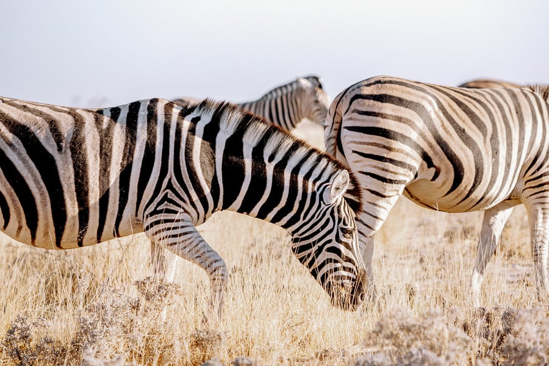

Tsessebe
 The tsessebe is a subspecies of Africa antelope and closely related to topi. Apart from South Africa, tsessebe is also found in Angola, Botswana, Namibia, Zimbabwe, Zambia, and Swaziland. It is the fastest antelope in Africa and can attain a speed of up to 90 km/h. The adult tsessebe is 150-230 cm long. The male weighs 137 kg while the female weighs 120 kg. In males, the horns can be as long as 40 cm and are mainly used in defending a territory and for mate attraction. Their bodies are covered by chestnut brown coat while the tail tuft and front faces are black. The tsessebe can live up to a maximum of 15 years and mainly graze on grassland and open plains.
The tsessebe is a subspecies of Africa antelope and closely related to topi. Apart from South Africa, tsessebe is also found in Angola, Botswana, Namibia, Zimbabwe, Zambia, and Swaziland. It is the fastest antelope in Africa and can attain a speed of up to 90 km/h. The adult tsessebe is 150-230 cm long. The male weighs 137 kg while the female weighs 120 kg. In males, the horns can be as long as 40 cm and are mainly used in defending a territory and for mate attraction. Their bodies are covered by chestnut brown coat while the tail tuft and front faces are black. The tsessebe can live up to a maximum of 15 years and mainly graze on grassland and open plains.
Rhino

Rhinos are large, stocky animals commonly known for their short legs and two horns on their muzzle with the longer horn sitting at the front of the nose. South Africa is home to over 80% of the world’s rhino population. The two species found in the country are the white and black rhinos. The rhinos are contained in protected areas such as Kruger National Park. Two of the four subspecies of black rhinos found in South Africa are the South-central and South-western species. White rhinos are the second largest mammals after elephants while black rhinos are relatively smaller than their relatives. The major threat to the South African rhinos is extensive poaching.